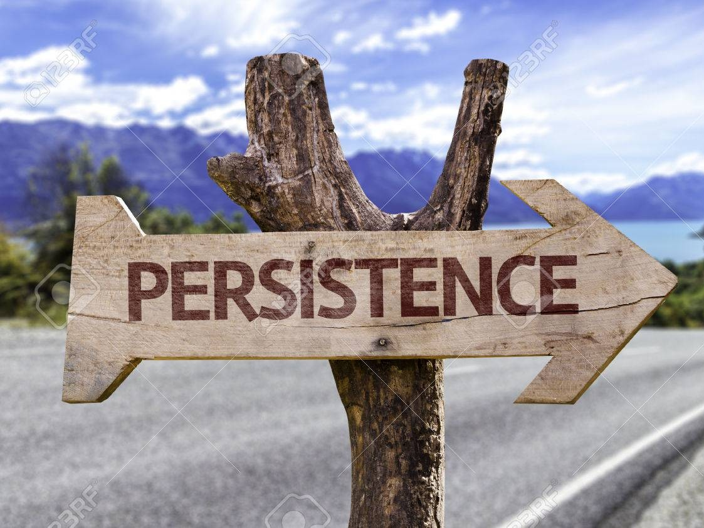

What Makes a Good CS Student

Persistence with Debugging: CS students don't give up when code fails. Each failure in the process of coding is a lesson. They develop patience and methodical thinking to track down errors and learn from them.

Attention to Detail: Even a missing semicolon can break a program. Good students learn to notice the small things that make a big difference in software development.
Resilience to Failure: Computer science involves constant trial and error. Students who bounce back from mistakes and view failure as feedback grow the fastest.